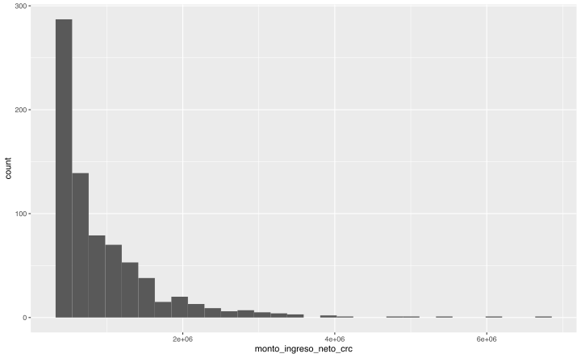
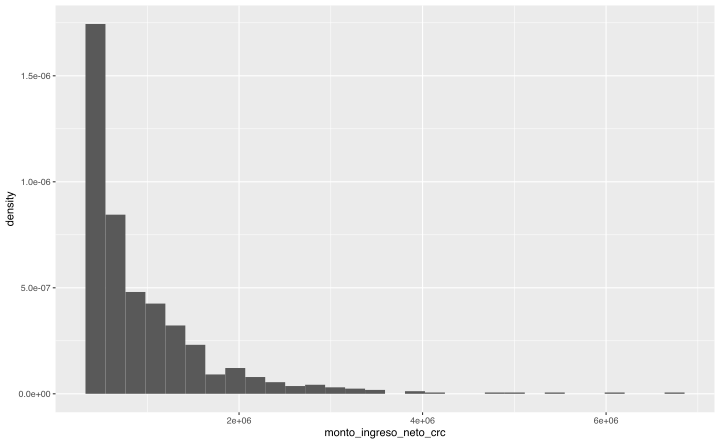
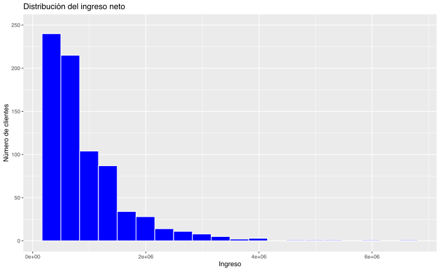
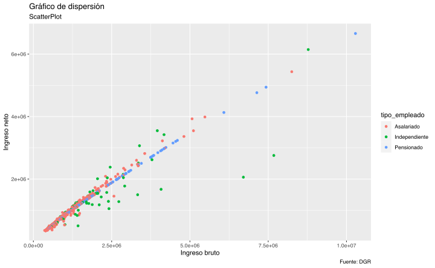
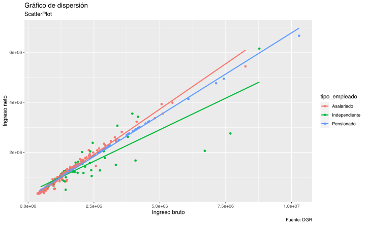
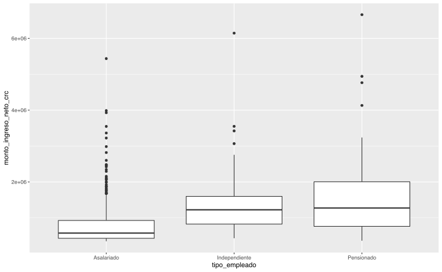
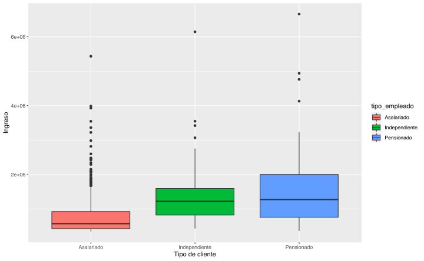
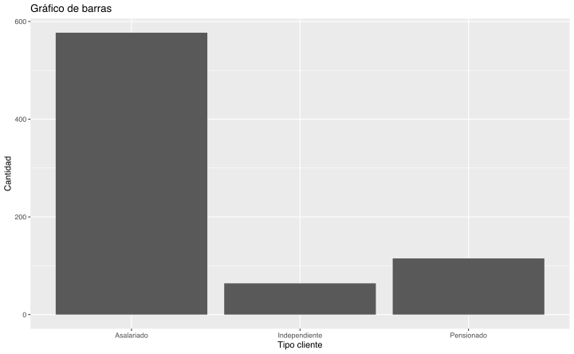

Capítulo 13 Visualización: Paquete ggplot2
En el proceso de análisis de datos la visualización de datos está presente en varias de sus etapas entre las principales están: la exploración de los datos y la presentación de los resultados, los gráficos permiten, de forma intuitiva, encontrar y entender patrones, grupos o valores atípicos que puedan existir en los datos, una vez terminado el proceso de exploración o predicción los gráficos nos permiten comunicar los resultados a nuestra audiencia sin importar si esta tiene o no conocimientos en técnicos.
13.1 Gramática de los gráficos
Un gráfico realizado con ggplot2 presenta, al menos, tres elementos:
Datos (Data) que queremos representar (que serán un data frame).
Características estéticas (aesthetic mappings) que describen cómo queremos que los datos se vean en el gráfico. Como se ve más adelante, se introducen con la función aes() y se refieren a:
- posición (en los ejes)
- color exterior (color) y de relleno (fill)
- forma de puntos (shape)
- tipo de línea (linetype)
- tamaño (size)
- Objetos geométricos (Geom) representan lo que vemos en un gráficos (puntos, líneas, etc.). Todo gráfico tiene, como mínimo, una geometría. La geometría determina el tipo de gráfico:
- geom_point (para puntos)
- geom_lines (para lineas)
- geom_histogram (para histograma)
- geom_boxplot (para boxplot)
- geom_bar (para barras)
- geom_smooth (líneas suavizadas)
- geom_polygons (para polígonos en un mapa)
Por tanto, para construir un gráfico con ggplot2 comenzamos con la siguiente estructura de código:
** ggplot(datos, aes()) + geom_tipo() **
A partir de esta estructura básica puede mejorarse la presentación de los gráficos introduciendo, por ejemplo, características estéticas en los objetos geométricos, agregando títulos a los gráficos, etc.
Otros elementos que conviene tener presente en un gráfico de ggplot2 son:
Stat (Stat), transformaciones estadísticas para, generalmente, resumir datos (por ejemplo: contar frecuencias, número de intervalos en los histogramas, etc.).
Escalas (Scale). Las escalas, por ejemplo, convierten datos en características estéticas (colores, etc.), crean leyendas… . - Coordenadas (coord): sistema de coordenadas cartesianas, polares, proyecciones, etc.
Faceting (Faceting), permite representar gráficos separados para subconjuntos de los datos originales.
Para a realizar algunos gráficos con ggplot primero cargamos la librería ggplot2. Si no está instalado el paquete lo instalamos.
# install.packages("ggplot2")
library(ggplot2)En los ejemplos que siguen tratamos de ir introduciendo poco a poco distintos elementos y argumentos para mejorar la apariencia de los gráficos.
13.2 Histogramas
Vamos a comenzar haciendo un histograma muy sencillo de os instrumentos del portafolio del banco. Para esto, recordemos que la instrucción comienza con la función ggplot(), en la que incluimos los datos y la estética con la que queremos que se presenten en el gráfico. Seguidamente le añadimos (+) la geometría (tipo histograma) con la función geom_histogram().
Muy importante: con ggplot2 añadimos capas (layers) con el símbolo +.
El histograma es el siguiente:
ggplot(datos.ingresos, aes(x = monto_ingreso_neto_crc)) +
geom_histogram() Dos cosas a considerar del histograma anterior:
- Por defecto, el número de intervalos es de 30. Es posible establecer el número de intervalos (bins), la amplitud del intervalo (binwidth) o fijar los puntos de corte de los intervalos (breaks).
- El eje Y corresponde al número de observaciones (frecuencias absolutas). Si estamos interesados en representar un histogramas de forma que el área del mismo sume 1, entonces tenemos que cambiar la estética de la siguiente forma:
ggplot(datos.ingresos, aes(x = monto_ingreso_neto_crc)) +
geom_histogram(aes(y = ..density..)) A partir de esta estructura básica, podemos ir añadiendo elementos para mejorar la presentación.
# Histograma con 20 intervalos
ggplot(datos.ingresos, aes(x = monto_ingreso_neto_crc)) +
geom_histogram(bins = 20, color = "white", fill = "blue")Ahora vamos a insertar un título al gráfico y también rotularemos los ejes. Para modificar las etiquetas de los ejes se utilizan las funciones xlab() y ylab(). Si, por ejemplo, quisiéramos omitir la etiqueta del eje Y agregamos: ylab(NULL).
También se pueden modificar los límites de los ejes, para esto se utilizan las funciones xlim() y ylim().
ggplot(datos.ingresos, aes(x = monto_ingreso_neto_crc)) +
geom_histogram(bins = 20, color = "white", fill = "blue") +
ggtitle("Distribución del ingreso neto ") +
xlab("Salario") +
ylab("Número de clientes")# Una alternativa al anterior sería:
ggplot(datos.ingresos, aes(x = monto_ingreso_neto_crc)) +
geom_histogram(bins = 20, color = "white", fill = "blue") +
labs(title = "Distribución del ingreso neto",
x = "Ingreso",
y = "Número de clientes") +
ylim(c(0, 250))
Para tratar de observar las diferencias en la distribución del salario según distintos grupo, por ejemplo, el género podemos:
Visualizar cada subconjunto de datos (ingreso neto para asalariados e independientes ) en distintos paneles. Para ello, utilizamos el elemento facet.
ggplot(datos.ingresos, aes(x = monto_ingreso_neto_crc)) +
geom_histogram(bins = 20, color = "white", fill = "blue") +
facet_grid(tipo_empleado ~ .)ggplot(datos.ingresos, aes(x = monto_ingreso_neto_crc)) +
geom_histogram(bins = 20, color = "white", fill = "blue") +
facet_wrap(~tipo_empleado)Hacemos el histograma pero usamos el tipo_empleado de cliente para colorear las partes que de cada intervalo corresponden a asalariados, independientes y a pensionados.
ggplot(datos.ingresos, aes(x = monto_ingreso_neto_crc, fill = tipo_empleado)) +
geom_histogram(bins = 20) +
ylim(c(0, 250))
ggplot(datos.ingresos, aes(x = monto_ingreso_neto_crc)) +
geom_histogram(bins = 10, aes(fill = tipo_empleado), position = "fill", alpha = 0.4) +
labs(x = "Ingreso neto", y = "Clientes", fill = "tipo_empleado") + # títulos de ejes y leyenda
scale_fill_discrete(labels = c("Asalariado", "Independiente", "Pensionado")) # títulos claves leyenda13.3 Gráficos de dispersión
# Opción 1
ggplot(datos.ingresos, aes(monto_ingreso_bruto_crc, monto_ingreso_neto_crc, color = tipo_empleado)) +
geom_point() +
labs(title = "Gráfico de dispersión",
subtitle = "ScatterPlot",
caption = "Fuente: DGR",
x = "Ingreso bruto",
y = "Ingreso neto") +
scale_color_discrete(name = "tipo_empleado", labels = c("Asalariado", "Independiente", "Pensionado"))
ggplot(datos.ingresos, aes(monto_ingreso_bruto_crc, monto_ingreso_neto_crc, color = tipo_empleado)) +
geom_point() +
geom_smooth(method = "lm", se = FALSE) +
labs(title = "Gráfico de dispersión",
subtitle = "ScatterPlot",
caption = "Fuente: DGR",
x = "Ingreso bruto",
y = "Ingreso neto") +
scale_color_discrete(name = "tipo_empleado", labels = c("Asalariado", "Independiente", "Pensionado"))
ggplot(datos.ingresos, aes(monto_ingreso_bruto_crc, monto_ingreso_neto_crc, color = tipo_empleado)) +
geom_point() +
geom_smooth(method = "lm") +
labs(title = "Gráfico de dispersión",
subtitle = "ScatterPlot",
caption = "Fuente: DGR",
x = "Ingreso bruto",
y = "Ingreso neto") +
scale_color_discrete(name = "tipo_empleado", labels = c("Asalariado", "Independiente", "Pensionado"))13.4 Gráficos de cajas
ggplot(datos.ingresos, aes(x = tipo_empleado, y = monto_ingreso_neto_crc)) +
geom_boxplot()
# Diagrama de caja con color de relleno
ggplot(datos.ingresos, aes(x = tipo_empleado, y = monto_ingreso_neto_crc, fill = tipo_empleado)) +
geom_boxplot() +
labs(x = "Tipo de cliente", y = "Ingreso", fill = "tipo_empleado") + # titulo ejes y leyenda
scale_x_discrete(labels = c("Asalariado", "Independiente", "Pensionado")) + # etiquetas del eje x
scale_fill_discrete(labels = c("Asalariado", "Independiente", "Pensionado")) # etiquetas claves leyenda
# Diagrama de caja sin leyenda por considerar redundante la información
ggplot(datos.ingresos, aes(x = tipo_empleado, y = monto_ingreso_neto_crc, fill = tipo_empleado)) +
geom_boxplot(outlier.colour = "blue") + # color de los outliers
labs(x = "Tipo cliente", y = "Ingreso") +
scale_x_discrete(labels = c("Asalariado", "Independiente", "Pensionado")) +
guides(fill = FALSE)# eliminamos la leyendaggplot(datos.ingresos, aes(x = tipo_empleado, y = monto_ingreso_neto_crc, fill = tipo_empleado)) +
geom_boxplot(outlier.colour = "blue") +
labs(x = "Tipo cliente", y = "Ingreso") +
scale_x_discrete(labels = c("Asalariado", "Independiente", "Pensionado")) +
guides(fill = FALSE) +
coord_flip() # cambio dirección de las cajasPuede resultar interesante localizar la media de cada grupo en los diagramas de caja. Para ello, hacemos uso del elemento stat (transformación estadística). Se puede añadir stat, básicamente, de dos formas:
- Añadir directamente una función stat_() y de esa forma anular su valor por defecto en la geometría.
- Añadir una función geom_() e introducir el elemento stat para anular el valor por defecto.
Veamos las dos formas comentadas de añadir.
# Añadimos la media utilizando la función geom_() y modificando el elemento stat
ggplot(datos.ingresos, aes(x = tipo_empleado, y = monto_ingreso_neto_crc, fill = tipo_empleado)) +
geom_boxplot(alpha = 0.3, outlier.colour = "blue") +
labs(x = "Género", y = "Salario") +
scale_x_discrete(labels = c("Asalariado", "Independiente", "Pensionado")) +
guides(fill = FALSE) +
coord_flip() +
geom_point(stat = "summary", fun.y = mean, shape = 16, size = 2, color = "red")13.5 Gráficos de barras
Los gráficos de barras, se utilizan comúnmente para representar variables categóricas (atributos u ordinales) y variables cuantitativas discretas.
ggplot(datos.ingresos, aes(tipo_empleado)) +
geom_bar()ggplot(datos.ingresos, aes(tipo_empleado)) +
geom_bar() +
labs(title = "Gráfico de barras",
x = "Tipo cliente",
y = "Cantidad")
ggplot(datos.ingresos, aes(tipo_empleado, fill = sector_empleo)) +
geom_bar() +
labs(title = "Gráfico de barras",
x = "Tipo cliente",
y = "Cantidad")ggplot(datos.ingresos, aes(x = tipo_empleado, fill = sector_empleo)) +
geom_bar() +
labs(x = "Tipo cliente", y = "Cantidad") +
scale_x_discrete(labels = c("Asalariado", "Independiente", "Pensionado")) +
scale_fill_discrete("Tipo empleado",
labels = c("Público", "Privado"))ggplot(datos.ingresos, aes(x = tipo_empleado, fill = sector_empleo)) +
geom_bar() +
labs(x = "Tipo cliente", y = "Cantidad") +
scale_x_discrete(labels = c("Asalariado", "Independiente", "Pensionado")) +
scale_fill_discrete("Tipo empleado",
labels = c("Público", "Privado")) +
geom_text(stat = "count", aes(label = ..count..),
position = "stack",
vjust = 1,
size = 2,
color = "black")ggplot(datos.ingresos, aes(x = tipo_empleado, fill = sector_empleo)) +
geom_bar() +
labs(x = "Tipo cliente", y = "Cantidad") +
scale_x_discrete(labels = c("Asalariado", "Independiente", "Pensionado")) +
scale_fill_discrete("Tipo empleado",
labels = c("Público", "Privado")) +
geom_text(stat = "count",
aes(label = paste(round((..count..) / sum(..count..) * 100), "%")),
position = "stack",
vjust = 1,
size = 2,
color = "black")ggplot(datos.ingresos, aes(x = tipo_empleado, fill = sector_empleo)) +
geom_bar(position = "fill") +
labs(x = "Tipo cliente", y = "Cantidad") +
scale_x_discrete(labels = c("Asalariado", "Independiente", "Pensionado")) +
scale_fill_discrete("Tipo empleado",
labels = c("Público", "Privado"))ggplot(datos.ingresos, aes(x = tipo_empleado, fill = sector_empleo)) +
geom_bar(position = "dodge") +
labs(x = "Tipo cliente", y = "Cantidad") +
scale_x_discrete(labels = c("Asalariado", "Independiente", "Pensionado")) +
scale_fill_discrete("Tipo empleado",
labels = c("Público", "Privado"))